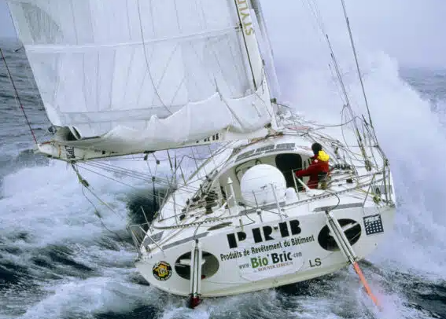
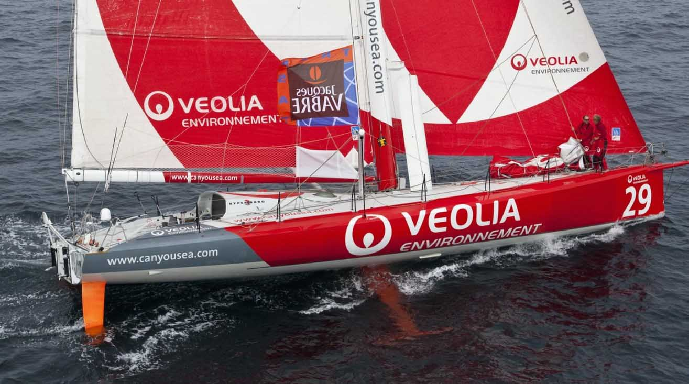
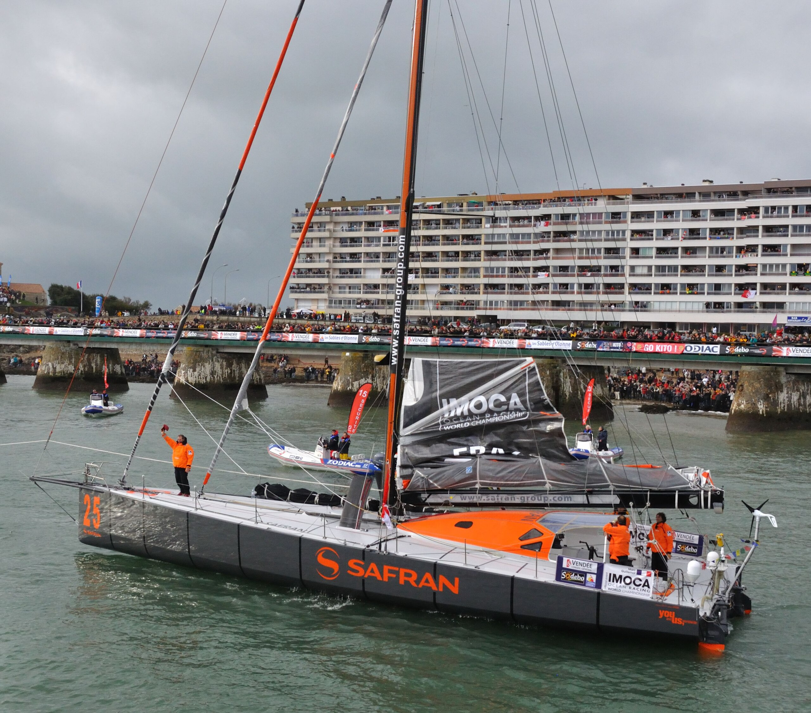
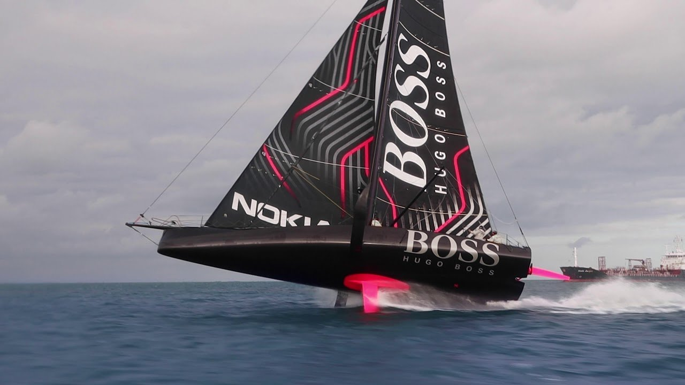
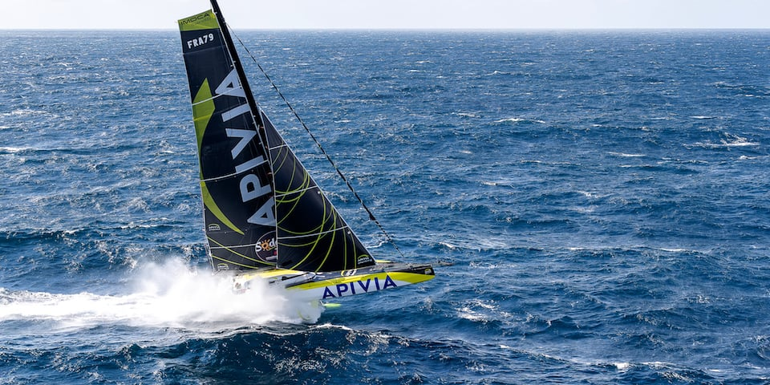
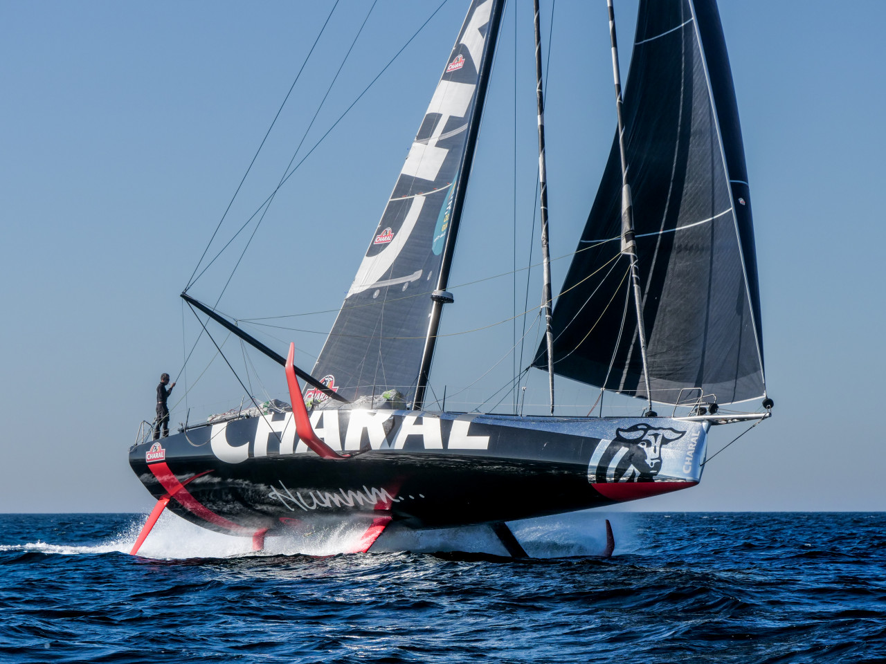

Les Imoca
Qu'est-ce qu'un Imoca ?
Les Imoca sont des voiliers de course utilisés en solitaire pour des courses océaniques. Ils mesurent 60 pieds (environ 18 mètres) et sont conçus pour résister à des conditions difficiles.
Ils sont construits en fibre de carbone et en alliages légers pour être rapides et solides.
Leur apparition
Les Imoca apparaissent au début des années 1990. À l’origine, les règles étaient très libres, on parlait de classe « open ».
Depuis 2010, les règles garantissent la sécurité et l’équité entre les bateaux. Les foils permettent aux Imoca de voler au-dessus de l’eau.
- Création de la classe Imoca : 1991
- Généralisation du carbone : 2008
- Premiers Imoca à foils : 2015
Galerie Imoca





